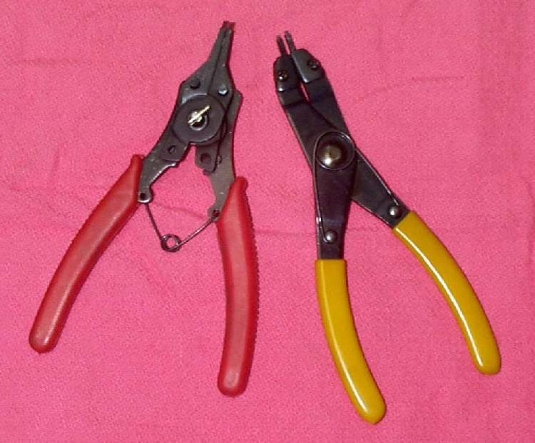

Many forks need the oil set by level (the height of the oil measured from the top of the tube), not only by volume. The level controls how stiff the end of the fork stroke feels. Too much oil makes the fork hard and can force oil past the seal. Too little lets it bottom out.
Safety
- Do this only when the springs are out and the forks are supported so they cannot fall.
- Keep fork oil off the brake disc and pads and off tyres.
- Dispose of used oil at a collection point.
You need
- The level and the oil grade from your bike's manual. No generic value is given here.
- A way to measure from the top of the tube. A purpose-made gauge has a stop that is set to the level and a hose and syringe that pulls out extra oil. A home-made one can use a length of pipe with marks, a piece of tubing and a syringe or a kitchen baster. Check the pipe stop against a ruler.
Steps
- With the fork leg upright, add the amount of oil in the manual to start with.
- Pump the damper rod slowly a few times to push air bubbles out. Wait a few minutes for the foam to settle.
- Put the leg in the position the manual requires. Some forks are measured fully compressed, some fully extended, and the spring must be out in both cases.
- Set the gauge stop to the level. Lower the tube into the leg until the stop rests on the top edge.
- Pull the syringe and draw off oil until air comes through. The oil is now at the set level.
- Repeat on the other leg so both match.
- Refit springs, spacers and caps. See Open a spring-loaded fork cap safely.
Check your work
- Both legs have the same level and the same grade of oil.
- The fork moves smoothly through its stroke with no hard stop before the end.
If it did not fix the problem
- Fork still bottoms out: Front forks bottom out, and see Add a spacer to firm a sagging fork spring.
- Fork too hard: Front forks feel harsh over bumps. Check that the level is not too high.